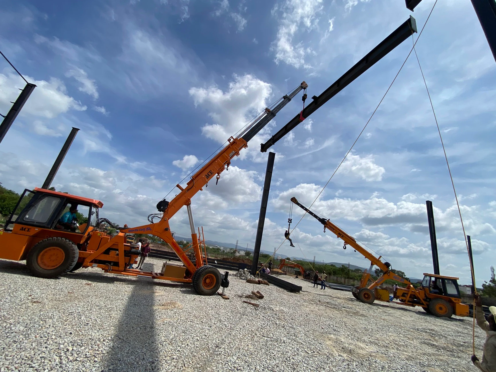
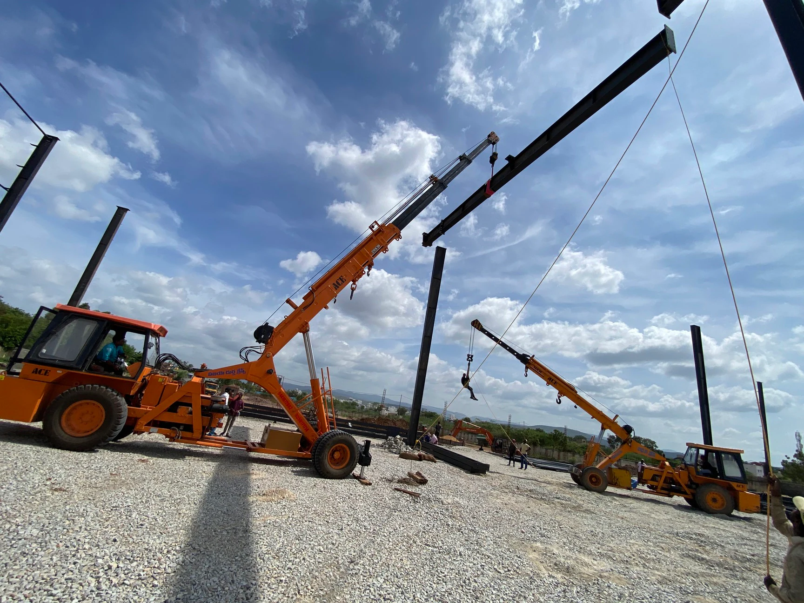

Welcome to Vijaya Durga Cranes Kadapa
Your trusted partner for heavy machinery and earth-moving services in Kadapa.
Your trusted partner for heavy machinery and earth-moving services in Kadapa.
Address: D No 74/142-2, Builtop Road, Kadapa City, Kadapa - 516001
Phone: +91 94410 72815
Email: vijayadurgacraneskadapa@gmail.com
We are your trusted partner for all crane rental and earth-moving needs. With years of experience, we specialize in providing heavy machinery solutions for your projects in Kadapa and surrounding areas.
We offer a wide range of crane rental services for construction projects, heavy lifting, and more. Whether you need to lift steel beams, heavy machinery, or large equipment, we have the right crane for the job.
Our earth-moving services cover all aspects of excavation, grading, land clearing, and more. Whether you're working on a small residential site or a large industrial project, we have the equipment and expertise to get the job done right.
Vijaya Durga Cranes Kadapa has been serving the Kadapa region for years, providing top-notch crane rental and earth-moving services for both residential and commercial projects. Our commitment to safety, efficiency, and quality makes us a preferred partner for all heavy machinery needs.
 
